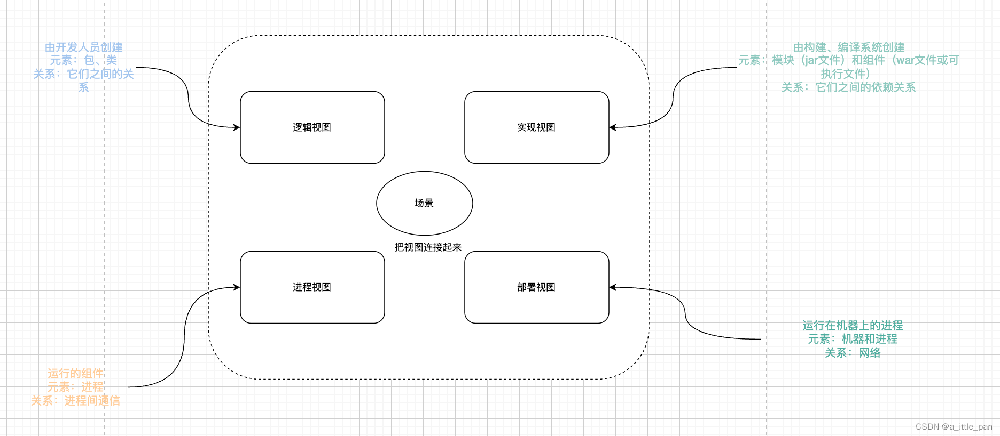
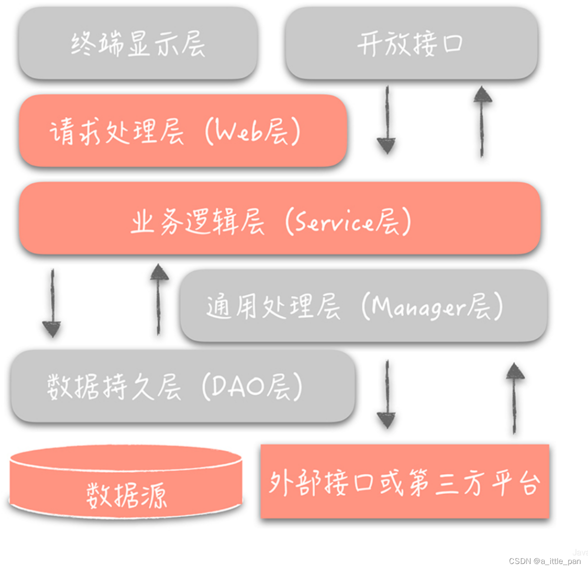
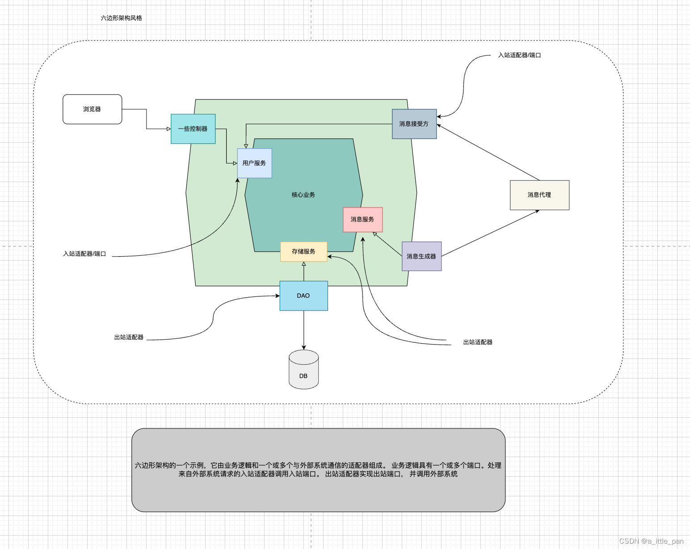

微服务系列之初探“微服务架构”
随笔¶
Sometimes you have to be in awe of what you want.
参考书籍： 1. “凤凰架构” 2. “微服务架构设计模式”
在了解微服务架构之前我们有必要解答“什么是架构”、“什么是架构的风格”这两个问题，同时需要带着“架构并不是被发明出来的，而是持续演进的结果”这种思想去看待软件架构。
什么是软件架构？¶
计算机系统的软件架构是构建这个系统所需要的一组结构，包括软件元素 、它们之间的关系以及两者的属性 - Bass 等注 < Documenting Software Architectures: Views and Beyond>
上面是卡耐基梅隆大学软件工程研究所的Les Bass及其同事对于软件架构的定义，上述的定义是非常抽象的以至于理解起来会比较吃力，那么我们应该怎么去理解这句话呢？下面是个人对于这个定义的一些见解：
软件架构可以类比于“土木工程”（土木老哥：没想到这里也可以cue到我，真的是会蟹！）中的对于建筑的“蓝图”，这个蓝图会描述建筑中表示承重结构的布置情况，构件类型，尺寸大小及构造做法，同时还会描述建筑不同结构之间该如何去组合、拼接（混泥土等是他们组合、拼接的介质）
个人声明：本人对土木这个行业了解并不多，上面的见解是通过查阅文献所总结，有描述不太对的地方，请见谅！
按照上面我们对于软件架构的描述，我们不难得出“软件架构是将软件分解成元素以及定义这些元素之间的关系”。一份完整的建筑“蓝图”中，会根据其专业内容或作用的不同，然后划分不同的模块去描述对应的内容（像结构、管线、电气等）。与其对应的“软件架构”也是如此，Phillip Krutchen 在他经典的论文( Architectural Blueprints—— The 4+1View Model of Software Architecture 》中提出了软件架构的4+1视图。

每个视图描述的内容（引用自“微服务架构设计模式”一书）：
- 逻辑视图：开发人员创建的软件元素。在面向对象的语言中，这些元素是类和包。它们之间的关系是类和包之间的关系，包括继承、关联和依赖
- 实现视图：构建编译系统的输出。此视图由表示打包代码的模块和组件组成，组件是由一个或多个模块组成的可执行或可部署单元。在Java 中，模块是JAR 文件，组件通常是WAR文件或可执行JAR文件 。它们之间的关系包括模块之间的依赖关系以及组件和模块之间的组合关系
- 进程视图：运行时的组件。每个元素都是一个进程，进程之间的关系代表进程间通信
- 部署视图：进程如何映射到机器 。此视图中的元素由(物理或庭拟)计算机和进程组成。机器之间的关系代表网络。该视图还描述了进程和机器之间的关系
- 场景视图：是其它几个视图的补充，用于通过use case将其它几个视图串联起来。
虽然最早的4+1视图由Philippe Kruchten于1995年提出，但是“经典永远都是经典”这句话在它身上体现的淋淋尽致。4 +1 视图是描述应用程序架构的绝佳方式。每一个视图都描述了架构的一个重要侧面（如何去画好这几个视图对每个架构师都是一个不小的挑战，而且挑战难度于系统的复杂是成正比的）。
这个时候有些小伙伴可能会有疑惑“我平时开发不用画架构图也可以完整的开发一套系统”，博主以前也是这样认为的，不过随着对于软件架构知识的不断积累，对这个问题也有了一些不同的看法。我们将一个系统从需求的层面进行划分，可以包含：
- 功能型需求：这些需求决定一个应用程序做什么。 这些通常都包含在用例(use case)或者用户故事(user story)中（像支付、扣款等就是
- 非功能型需求：我们把这类需求也称之为质量属性需求 ，或者简称为 “ 能力” 。
应用的架构其实跟功能性需求没什么关系，这种需求我们可以使用任意的架构去实现，甚至，你可以自定义自己喜欢的方式去实现。但是这些非功能性需求决定一个应用程序在运行时的质量，比如可扩展性和可靠性（设计模式）。它们也决定了开发阶段的质量，包括可维护性、可测 试性、可扩展性和可部署性。为应用程序所选择的架构将决定这些质量属性。
听到这里，对于什么是架构与架构的重要性有了一个更加深刻的理解，我们再来看看什么是架构的风格
架构风格¶
架构风格确定可以在该风格的实例中使用的组件和连接器的词汇表，以及关于如何组合它们的一组约束 -- 《微服务架构设计模式》
还是通过cue“土木工程”的好兄弟来解释“架构风格”这个概念，在物理世界中，建筑物的建筑通常遵循特定的风格，例如维多利亚式 、美国工匠式或 装饰艺术式，每种风格都是一系列设计决策，限制了建筑的特征和建筑材料。建筑风格的概念也适用于软件。应用程序通常使用多种架构风格的组合，上篇博客我们说的“单体架构”（将应用程序构建为单个可执行和可部署组）其实就是一种软件架构风格与“单体架构风格”对应的就是“微服务架构风格”（将应用程序构建为松糯合、可独立部暑的一组服务），这两种架构风格可以作用在4+1视图中的任意视图中。
单体架构我们上篇文章已经具体介绍过了，微服务架构着重放在后面文章去介绍，接下来我们去研究一下应用系统中的4+1视图中其他的视图实例：“MVC分层架构风格”、“六边形架构风格”
分层式架构风格¶
分层架构将软件元素按“层” 的方式组织。每个层都有明确定义的职责。分层架构还限制了层之间的依赖关系。每一层只能依赖于紧邻其下方的层如果严格分层)或其下面的任何层。

我们可以将分层架构应用于前面讨论的四个视图中的任何一个。流行的三层架构是应用于逻 辑视因的分层架构。它将应用程序的类组织到以下层中：
- 表现层 :包含实现用户界面或外部API 的代码
- 业务逻辑层:包含业务逻辑。
- 数据持久化层:实现与数据库交互的逻辑。
这种分层架构风格是我们平时开发中使用最多的一种架构风格，这种架构风格的优点：
- 简化设计：各司专职，而不必将自己活成全才。
- 高复用：比如在设计某系统时，发现某层具有通用性，就可把它抽取独立出来，在设计其它系统时使用。
- 横向扩展：可以让我们更容易做横向扩展。如果系统没有分层，当流量增加时我们需要针对整体系统来做扩展。但是，如果我们按照上面提到的三层架构将系统分层后，就可以针对具体的问题来做细致的扩展。
但是这种架构风格也有很明显的弊端：
- 单个表现层:它无法展现应用程序可能不仅仅由单个系统调用的事实。
- 单一数据持久化层 :它无法展现应用程序可能与多个数据库进行交互的事实。
- 将业务逻辑层定义为依赖于数据持久化层:理论上，这样的依赖性会妨碍你在没有数据库的情况下测试业务逻辑。
此外，分层架构错误地表示了精心设计的应用程序中的依赖关系。业务逻辑通常定义数据访问方法的接口或接口库。数据持久化层则定义了实现存储库接口的DAO 类。换句话说，依赖关系与分层架构所描述的相反。
六边形架构¶
分层架构风格有不少的缺点，六边形架构风格是克服这些弊端的分层架构风格的替代架构

六边形架构风格选择以业务逻辑为中心的方式组织逻辑视图。应用程序具有一个或多个入站适配器 ，而不是表示层，它通过调用业务逻辑来处理来自外部的请求。同样，应用程序具有一个或多个出站适配器，而不是数据持久化层，这些出站适配器由业务逻辑调用并调用外部应用程序。此架构的一个关键特性和优点是业务逻辑不依赖于适配器。相反，各种适配器都依赖业务逻辑。
业务逻辑具有一个或多个端口(port)。端口定义了 一组操作，关于业务逻辑如何与外部交互。例如，在Java 中，端口通常是Java 接口。有两种端口:人站和出站端口。入站端口是业务逻辑公开的API，它使外部应用程序可以调用它。入站端口的一个实例是服务接口， 它定义服务的公共方法。出站端又是业务逻辑调用外部系统的方式。出站端口的一个实例是存储库接口，它定义数据访问操作的集合
业务逻辑的周围是适配器 。与端口一样，有两种类型的适配器:入站和出站。入站适配器通过调用入站端口来处理来自外部世界的请求。入站适配器的一个实例是Spring MvC Controller，它实现一组REST接口(endpoint)或一组Web页面。另一个实例是订阅消息的消息代理客户端。多个入站适配器可以调用相同的入站端口。
出站适配器实现出站端口，并通过调用外部应用程序或服务处理来自业务逻辑的请求。 出站适配器的一个实例是实现访问数据库的操作数据访问对象( DAO)类。另一个实例是调用远程服务的代理类。出站适配器也可以发布事件。
六边形架构是描述微服务架构中每个服务的架构的好方法，其优点：
- 六边形架构风格的一个重要好处是它将业务逻辑与适配器中包含的表示层和数据访问层的逻辑分离开来。业务逻辑不依赖于表示层逻辑或数据访问层逻辑。由于这种分离，单独测试业务逻辑要容易得多。另一个好处是它更准确地
- 反映了现代应用程序的架构。可以通过多个适配器调用业务逻辑，每个适配器实现特定的API 或用户界面。业务逻辑还可以调用多个适配器，每个适配器调用不同的外部系统。
六边形架构的初衷是为了解决技术与业务系统的解耦合问题，以及技术与技术间的解耦合问题，这一架构从设计模式中来，从业务的实体服务出发，将面向接口的设计具体化的端口协议和适配器实现，将业务实体实现自服务的完备性，可以看作是微服务的一个理论基础。